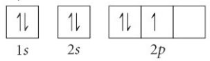
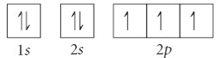

Press Ctrl-Z to toggle the answers.
Practice Test Chapter 3
Mr. Alder
Sep 20, 2022
name: ______________________________________
1) An orbital that penetrates into the region occupied by core electrons will be at a lower energy level.
A) True*
B) False
2) Which of the following is a property of metals?
A) malleable*
B) poor conductor of heat
C) brittle
D) brittle
3) Which of the following has the smallest atomic radius; Mg, Ca, Ca, or Sr?
A) Sr
B) Ca
C) Mg*
D) Ca
4) Which of the following has the most metallic character; Ar, Kr, Xe, or Rn?
A) Xe
B) Rn*
C) Kr
D) Ar
5) Give the noble gas ground state electron configuration for Mg
A) [Ne] 3s1
B) [Ar] 4s1
C) [Ar] 4s2
D) [Ne] 3s2*
6) Which of the following has the smallest atomic radius; Mg, Ar, S, or Xe?
A) Ar*
B) Xe
C) Mg
D) S
7) Which rule states that at ground state electrons will fill the lowest energy orbitals first?
A) Heisenberg uncertainty principle
B) Aufbau principle*
C) Pauli exclusion principle
D) Hund's rule
8) which of the following is a actinide?
A) uranium*
B) nitrogen
C) calcium
D) germanium
9) Which ground-state element has the following electron configuration?
1s2 2s2 2p6 3s2 3p6 4s1 3d10 4p4
A) arsenic*
B) chromium
C) tellurium
D) sulfur
10) Which of the following has the most metallic character; P, S, Cl, or Ar?
A) Ar
B) Cl
C) S
D) P*
11) Which of the following is a metaloid?
A) germanium*
B) chlorine
C) strontium
D) krypton
12) Give the ground state electron configuration for Br
A) 1s2 2s2 2p6 3s2 3p6 4s1 3d10 4p5*
B) 1s2 2s2 2p6 3s2 3p6 4s1 3d10 3d10 4p5
C) 1s2 2s2 2p6 3s2 3p5
D) 1s2 2s2 2p6 3s2 3p6 4s1 3d10 4p6 5s2 4d10 5p5
13) How many core electrons does Mg have?
A) 18
B) 10*
C) 12
D) 2
14) How many valence electrons does Br have?
A) 35
B) 7*
C) 17
D) 35
15) Which of the following has the most nonmetallic character; P, S, Cl, or Ar?
A) P
B) S
C) Ar*
D) Cl
16) Which atom or ion has the electron configuration below?
[Ne] 3s2 3p6
A) Sr2+
B) Sn2-
C) Ca2+*
D) Ca+
17) Predict the charge that nitrogen will take as an ion.
A) -3*
B) +3
C) +2
D) +1
18) Which element has a ground state electronic configuration of [Kr] 5s2 4d7?
A) Rh*
B) Mn
C) Co
D) Tc
19) Which of the following has the largest atomic radius; Li, F, K, or Br?
A) K*
B) F
C) Li
D) Br
20) Which of the following represents a violation of the Pauli exclusion principle?
A) 
B)
 *
*C) 
D)

21) Which of the following has the most non-metallic character; Be, Ne, Ca, or Kr?
A) Be
B) Ca
C) Kr
D) Ne*